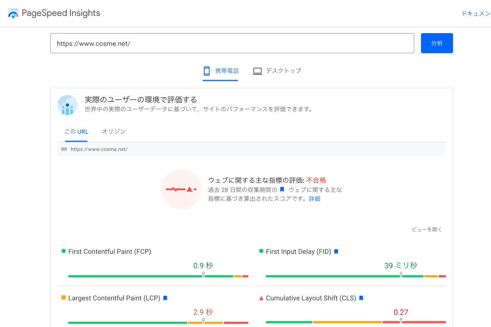
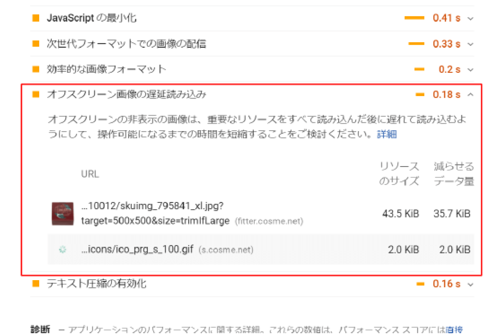
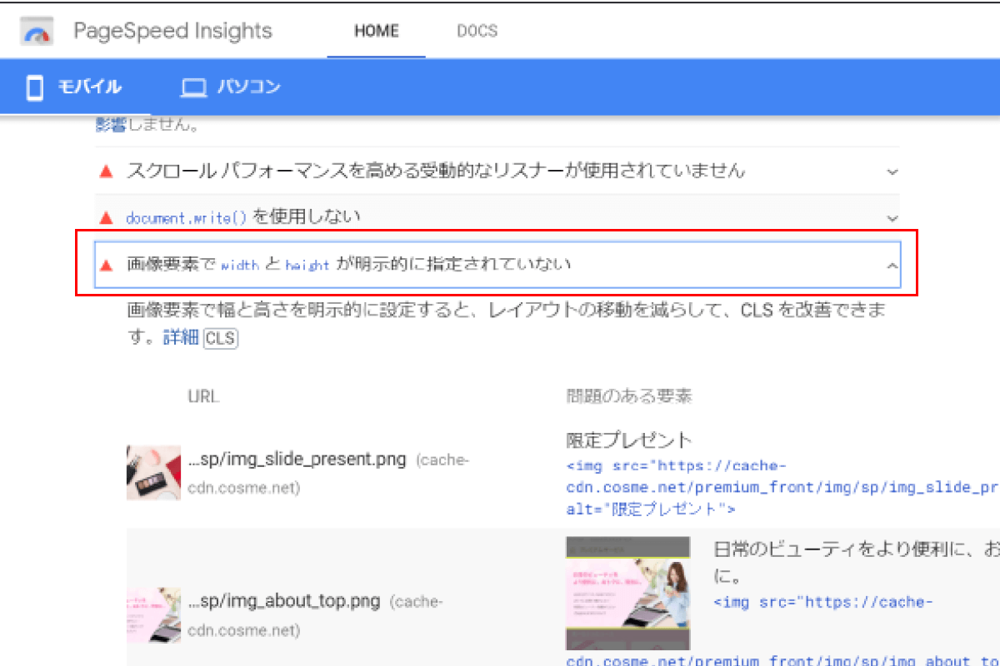
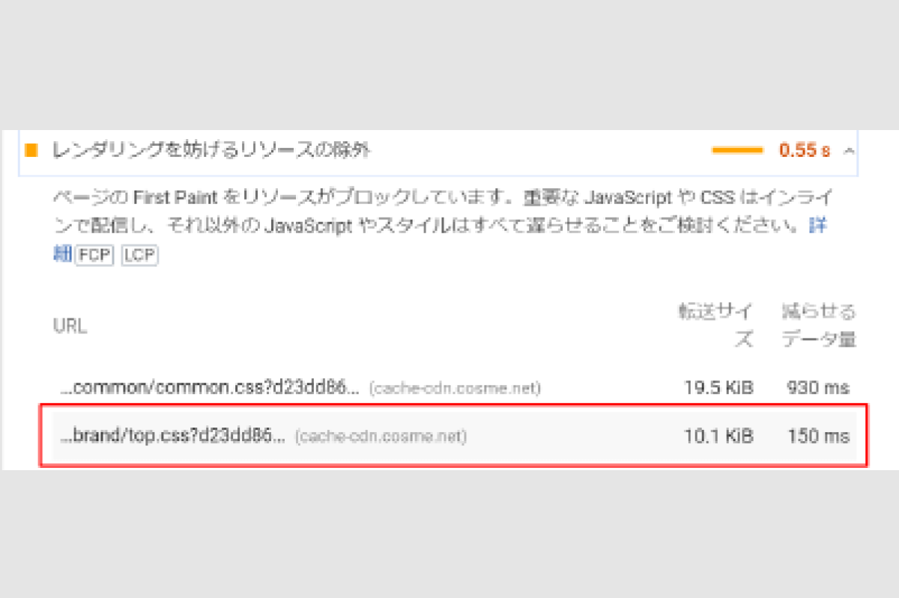

KYOSUKE TSUKAMOTO
works
Core Web Vitalsの数値改善によるSEO対策
-
SOFTWARE
-
-
LANGUAGE & FRAMEWORK
-
-
SEASON & TIMES
-
-
MEMBER
-
-
Core Web Vitalsとは？
Googleが掲げているサイトの健全性を示す重要指標であり、読み込み時間を意味するLPC、インタラクティブ性を意味するFDI、ページコンテンツの視覚的な安定性を意味するCLSの3つの指標を差しています。モバイルのCore Web VitalsのスコアはGoogleの検索要因に組み込まれSEOに影響しています。
-
プロジェクト概要
Core Web Vitalsの数値を改善し、ページのユーザー体験を向上させるプロジェクトです。そのうちフロントエンドエンジニアとしてリファクタリングを行いました。
-
課題・背景
LCP、FDI、CLSのスコアが低く、サイトの健全性が担保されていない。
-
意図・目的
LCP、FDI、CLSのスコアを改善しSEO対策につなげ、ユーザー体験を向上させる。
-
結果・実績
@cosmeの月間ユニークユーザー数が過去最高水準である1600万人を達成。
開発プロセス
-

対象範囲のサイトURLを、パフォーマンス診断ツール「PageSpeed Insights（PSI）」で診断し、今回のプロジェクトでは主にLCP、CLSの改善を行いました。
改善例
-

商品ページのカルーセルのオフスクリーン画像を遅延読み込みさせ、LCPの数値を改善する施策を行いました。
元々商品ページではLozad.jsというリソースを遅延読み込みさせるためのライブラリを使用していたが、カルーセルのオフスクリーン画像と相性が悪く、遅延読み込みが効いていませんでした。
そこで、Swiperというカルーセルを簡単に実装でき、オフスクリーン画像を遅延読み込みすることができるプラグインを使用して遅延読み込みを行って改善しました。 -

プレミアムページの画像サイズ指定を行い、CLSの数値を改善する施策を行いました。プレミアムページをPSIで診断したところ、ページ内の画像において、width、heightが明示的に指定されてないとCLSが悪化してしまう診断結果が得られたので、プレミアムページ内の画像にwidth、height指定し、CLSの数値を改善しました。
-

ブランドページの使われていないCSS、JSを削除し、LCPの数値を改善する施策を行いました。ブランドをPSIで診断したところ、ページ内において使われていないCSS、JSの削除が改善項目に挙げられたため、不要なCSS、JSを削除し、LCPの数値を改善しました。